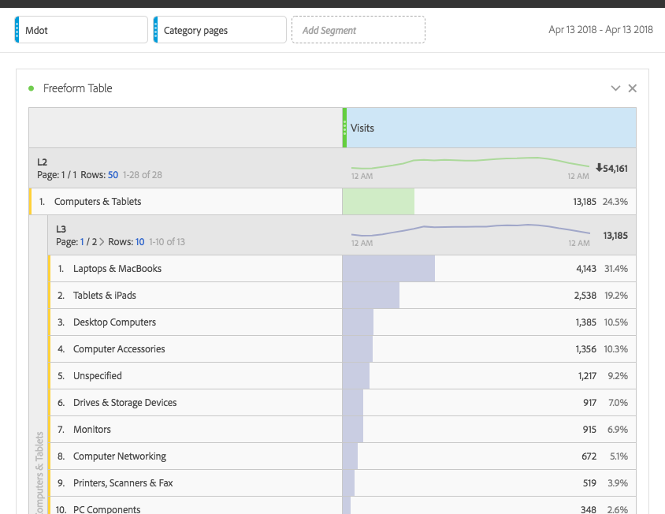

Agenda
Recos and A/Bs
- Top Viewed in Brand/Category
- Adding Marketplace items to recos
Enablement
- A/B setup on Mdot with React
- Category/Breadcrumb tracking on Mdot
- Data stitching with AAM on Checkout pages
Recos and A/B Tests
Hub recos: Brand/Category
Key Implications
- Gives business flexibility to tweak hub widgets
-
Examples
- Video games + Nintendo event = only recommend Nintendo games
- Apple event + Computers & Tablets = only recommend Macbooks
- Brand enablement -> brand store recos
Marketplace items in category widgets
Key Learning
- Reco algorithm has logic to boost on sale items, let's be mindful of MP
- Issue is resolvable through boost lists, tweaking weighting logic, adding more aglorithms in sequence criteria to fill more slots
Enablement
A/B testing on Mdot
In Progress

Category/Breadcrumb tracking on Mdot
Category/Breadcrumb tracking on Mdot
- Your fav evars 2-7, evar117, L2-L6 are now available
First meeting with biz on data tracking
Success! Thank you Nicki for hosting
Key Learnings
- Pain points and major wants (vendor type on mdot)
- Lots of topics for Analytics Jam (unspecified?? how do I see x??)
Data to AAM
Data to AAM
- Checkout data are now sending to AAM
- Enables marketing to start building traits on customers who have purchased items >$x
- Category/Brand purchase info is coming!
Team Changes
Mandeep (Audience Manager) and Yana (Adobe Analytics) will join glass room with Jorge's team for a sprint
I will sit with APEX to implement/improve data tracking for new Mdot site